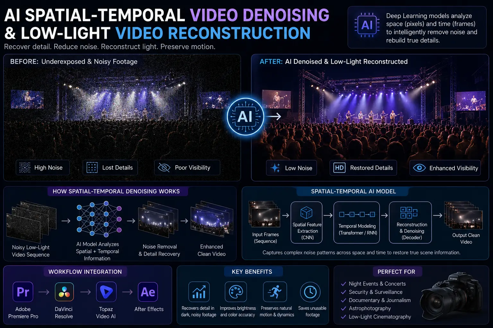
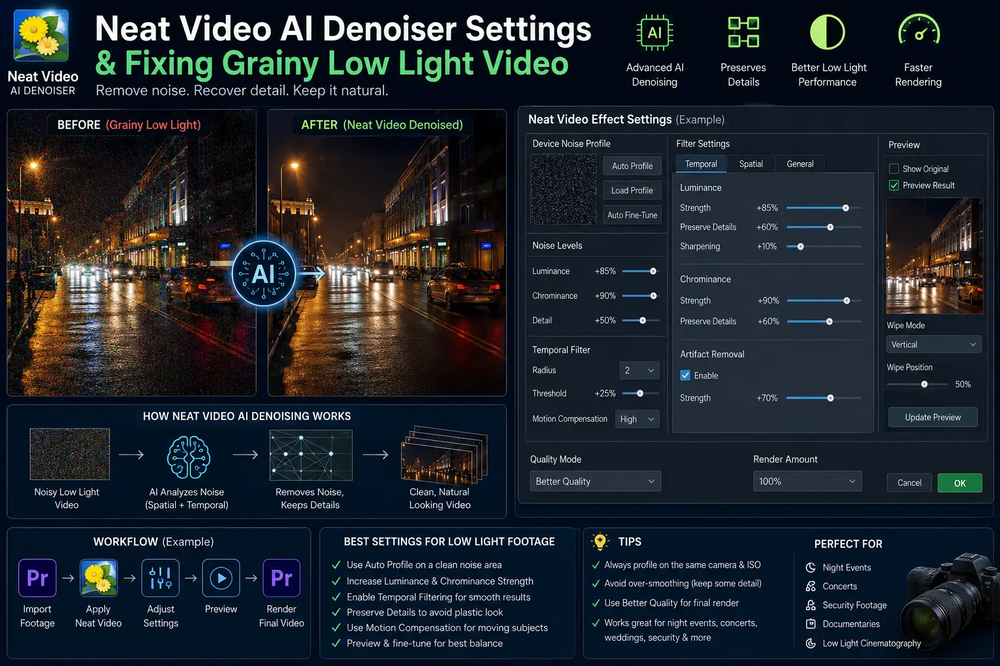

Using AI Spatial-Temporal Denoising to Save Underexposed Night Event Footage
The Low-Light Challenge in Event Videography Post-Production
Event videography is defined by unpredictable environments. Corporate galas, outdoor product launches, VIP award nights, and high-energy music festivals almost always take place under challenging lighting conditions. When filming in low light, cinematographers are forced to push camera ISO settings to 6400, 12800, or higher while opening apertures wide open. Despite using modern mirrorless and cinema sensors, underexposed night footage frequently suffers from severe luminance grain, dancing chrominance noise, and crushed shadow details.
Historically, event videography post-production teams faced a harsh compromise when dealing with severely underexposed shots. Traditional noise reduction filters in non-linear editors (NLEs) applied uniform spatial blurs across the entire frame. While this eliminated harsh digital noise, it simultaneously destroyed fine hair details, smudged skin textures, blurred background decorations, and introduced distracting motion trails or ghosting around moving subjects. Editors often had to choose between a noisy, distracting image or a smooth, plastic-looking video that lacked professional crispness.
Fortunately, breakthrough advancements in deep learning have transformed commercial video restoration. By leveraging AI Spatial-Temporal Video Denoising, post-production teams can now analyze video files across space and time simultaneously. This state-of-the-art approach makes fixing grainy low light video predictable and clean, enabling editors to salvage previously unusable night event clips and elevate them to broadcast quality.
Understanding Spatial vs. Temporal AI Video Denoising
To understand why modern AI algorithms succeed where legacy plugins failed, it is essential to explore how AI Spatial-Temporal Video Denoising operates. Digital noise created by camera sensors under high ISO settings consists of two distinct components: spatial noise and temporal noise.
Spatial Noise Reduction: Spatial algorithms analyze individual pixels in relation to their neighboring pixels within a single video frame. Standard spatial filters look for sharp variations in brightness or color between adjacent pixels and smooth them out. Advanced neural spatial models go a step further by recognizing structural patterns—distinguishing between random digital noise specs and legitimate high-frequency textures such as fabric weaves, hair strands, or architectural edges.
Temporal Noise Reduction: Temporal algorithms evaluate sequences of consecutive frames (often 5 to 9 frames before and after the current frame). Because digital sensor noise changes randomly from frame to frame while the underlying subject moves along predictable motion vectors, temporal AI models can calculate mathematical averages across time. The neural network tracks motion vectors, separates stationary background elements from moving subjects, and subtracts the erratic frame-to-frame noise while preserving solid image data.
When combined, spatial-temporal algorithms execute complete Low-Light Video Reconstruction. The system cleans up pixel artifacts frame-by-frame while utilizing temporal history to stabilize background shadows and remove color dancing. This dual-action approach is critical for preserving detail in night shots, keeping eyes sharp, skin textures natural, and stage lighting highlights punchy.
Sensor Profile Precision
AI models build accurate noise fingerprints tailored to specific camera sensors, ISO levels, and picture profiles for maximum cleanup accuracy.
Artifact-Free Motion
Advanced optical flow tracking prevents ghosting, motion smearing, and trailing around fast-moving subjects during dark night shoots.
Texture & Edge Protection
Spatial-temporal algorithms isolate background noise without softening fine facial features, hair, wardrobe details, or event branding.
Omnipresent Asset Yield
Restoring dark event footage unlocks valuable clips for high-resolution Short-Form Visual Asset Slicing across social media platforms.

Optimizing Neat Video AI Denoiser Settings for Low-Light Reconstruction
Among commercial post-production toolsets, Neat Video remains the gold standard plugin for fixing grainy low light video. However, relying on default auto-profiles rarely yields optimal results on underexposed event footage. Achieving professional commercial video restoration requires fine-tuning Neat Video AI denoiser settings to match the specific noise characteristics of your raw media.
Follow these professional guidelines when configuring Neat Video AI denoiser settings for night event clips:
- Manual Noise Profiling: Never rely purely on automated full-frame analysis. Select a uniform, out-of-focus dark area within your footage (such as a shadowy background wall, an unlit curtain, or a dark jacket) that contains digital noise but zero sharp edge detail. Build a custom device noise profile for that exact clip and ISO level.
- Temporal Filter Tuning: Increase the temporal radius to 3–5 frames for standard motion, or up to 7 frames for slow-moving speech scenes. Enable advanced dust/flicker reduction and turn on optical flow motion compensation to eliminate ghosting artifacts around moving subjects.
- Luminance vs. Chrominance Separation: High ISO noise is composed of harsh color specks (chrominance) and grainy brightness variations (luminance). Set chrominance noise reduction high (80%–100%) because human eyes are highly sensitive to color dancing, but keep luminance noise reduction conservative (40%–65%) to maintain organic contrast and depth.
- Frequency Band Adjustments: Neat Video splits noise into High, Mid, Low, and Very Low frequency bands. Reduce High-frequency noise aggressively while preserving Mid-frequency structures. If shadow areas exhibit large blotchy noise pools, carefully raise the Low-frequency noise reduction threshold.
- Post-Denoise Detail Recovery: Utilize Neat Video's internal sharpening tool with ultra-low radius and high threshold settings. This selectively sharpens fine subject edges that may have softened slightly during spatial filtering without re-amplifying background noise.
The Complete Low-Light Video Reconstruction Workflow
Applying Low-Light Video Reconstruction effectively requires far more than dropping a denoiser plugin onto your edit timeline. The order of operations in your node tree or effect stack dictates whether your final image looks crisp and organic or muddy and over-processed.
Here is the industry-standard workflow for event videography post-production when handling dark, underexposed night footage:
- Denoise Before Color Grading: Always place your spatial-temporal denoiser at the very beginning of your image processing pipeline (Node 1 in DaVinci Resolve or the top effect in Premiere Pro). If you lift shadows or push contrast curves before denoising, you amplify digital noise exponentially, making it significantly harder for AI algorithms to isolate pure noise from image data.
- Apply Log to Rec.709 Color Space Transform: Convert your camera's logarithmic profile (S-Log3, C-Log2, V-Log) to standard Rec.709 color space immediately after the denoise node. Denoising in log space ensures linear mathematical evaluation of sensor noise patterns.
- Targeted Exposure Lifting: Use power windows or AI masks (such as subject or face isolation masks) to lift exposure specifically on human subjects and key stage elements rather than performing a global exposure boost that exposes noisy background shadows.
- Selective Edge Sharpening & Micro-Contrast: Apply mild midtone detail or high-pass sharpening to facial features and wardrobe textures. This reinforces edge clarity and ensures you are preserving detail in night shots.
- Organic Film Grain Overlay: After removing ugly digital sensor grain, blend a subtle 35mm organic film grain layer (at 10%–15% opacity) over the entire video. Adding consistent, fine organic grain glues the image together, hides microscopic compression artifacts, and restores a filmic texture.
Industry Denoising Tools
- Neat Video v5/v6 Pro Plugin.
- DaVinci Resolve Studio Temporal NR.
- Topaz Video AI Enhancement.
- Boris FX Continuum Noise Reduction.
Core Settings Checklist
- Build manual flat-area noise profile.
- Set temporal radius to 3–5 frames.
- Keep luminance NR at 40%–60%.
- Push chrominance NR to 80%–100%.
Restoration Finishing
- Denoise prior to primary contrast curves.
- Isolate faces with AI power windows.
- Apply selective high-pass sharpening.
- Overlay 35mm organic film grain.

Fueling Short-Form Visual Asset Slicing with Restored Night Footage
In today's digital media ecosystem, full-length event recaps are only a small portion of a brand's media strategy. Marketing teams rely on Short-Form Visual Asset Slicing to turn a single event recording into dozens of high-performing Instagram Reels, YouTube Shorts, and TikTok clips.
However, vertical short-form video presents a unique technical hurdle: mobile phone displays feature ultra-high pixel densities and auto-brightness displays. When a user scrolls past a dark video on an OLED smartphone screen, digital noise and color dancing stand out immediately, giving the brand an unpolished appearance.
By integrating AI Spatial-Temporal Video Denoising into your Short-Form Visual Asset Slicing workflow, you ensure that every cropped 9:16 vertical clip maintains a broadcast-quality aesthetic. Clean night event videos grab immediate scroller attention, reflect prestige on brand sponsors, and maximize content reach across social media distribution channels.
Frequently Asked Questions
What is AI spatial-temporal video denoising and how does it clean up low-light night footage?
AI spatial-temporal video denoising is an advanced post-production algorithm that analyzes digital noise across both individual spatial frames (pixels within a single frame) and temporal sequences (pixels moving across consecutive frames). By evaluating how sensor noise changes over time while genuine subject detail remains consistent, AI models separate random digital grain from actual visual data. This enables video editors to clean up underexposed night event footage without smudging textures or introducing motion artifacts.
How do Neat Video AI denoiser settings differ from basic NLE noise reduction plugins?
Basic NLE noise reduction plugins apply static spatial blurs across the entire image, which degrades sharp focus, softens skin textures, and smudges fine details. Neat Video AI denoiser settings utilize custom noise profiling—building a mathematical model of your camera sensor's exact digital noise pattern under specific ISO and lighting conditions. Combined with temporal frame blending, it removes severe low-light grain while preserving crisp edges, fine fabric weaves, and facial details in night shots.
What are the best low-light video reconstruction techniques for event videography post-production?
Low-light video reconstruction techniques include: first, creating a dedicated noise profile from a flat, out-of-focus background area; second, applying spatial-temporal noise reduction before color grading so noise isn't amplified by contrast curves; third, using selective frequency sharpening to restore fine detail after denoising; and fourth, blending a subtle layer of organic film grain back over the cleaned video to maintain a natural, cinematic texture.
Why is AI spatial-temporal denoising essential for short-form visual asset slicing?
AI spatial-temporal denoising is essential for short-form visual asset slicing because mobile scrollers instantly notice noisy, low-quality video on high-resolution smartphone displays. Cleaning up dark, grainy event footage ensures that extracted social clips maintain a broadcast-quality aesthetic, reinforcing event authority and protecting brand reputation across digital channels.
Conclusion: Unlocking the Full Value of Your Event Media Assets
Underexposed night event footage no longer has to be discarded or buried in low-resolution recaps. Through AI Spatial-Temporal Video Denoising, Low-Light Video Reconstruction, and expert commercial video restoration techniques, production studios can transform dark, grainy footage into stunning visual assets that showcase event authority.
By fine-tuning Neat Video AI denoiser settings, executing structured workflows for fixing grainy low light video, and preserving detail in night shots, event organizers can generate premium master videos and high-impact social clips. Whether for corporate archives or Short-Form Visual Asset Slicing, modern AI tools ensure that every moment captured under night skies shines with pristine clarity.
At The PhD Ads in Madurai, we specialize in high-end event videography post-production, advanced noise removal, and custom video workflows designed to turn challenging event footage into captivating brand stories.
Key Topics
Ready to Restore Grainy Night Footage to Broadcast Quality?
At The PhD Ads in Madurai, our expert team utilizes cutting-edge AI Spatial-Temporal Video Denoising and commercial video restoration techniques to salvage underexposed event footage, build custom noise profiles, and slice social assets that captivate your audience.
Email: team@e2o.in